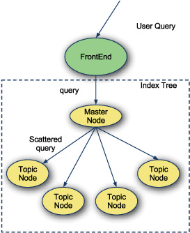
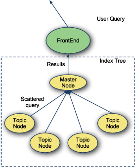
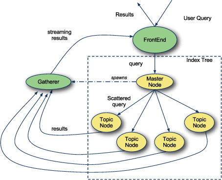
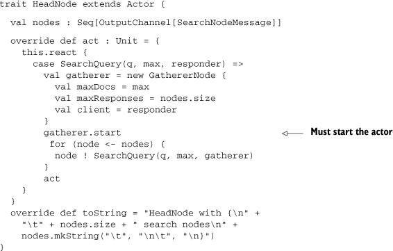
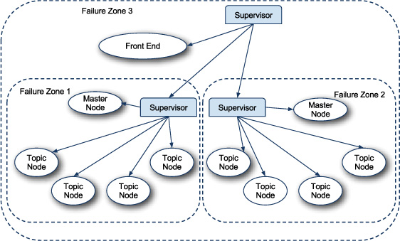
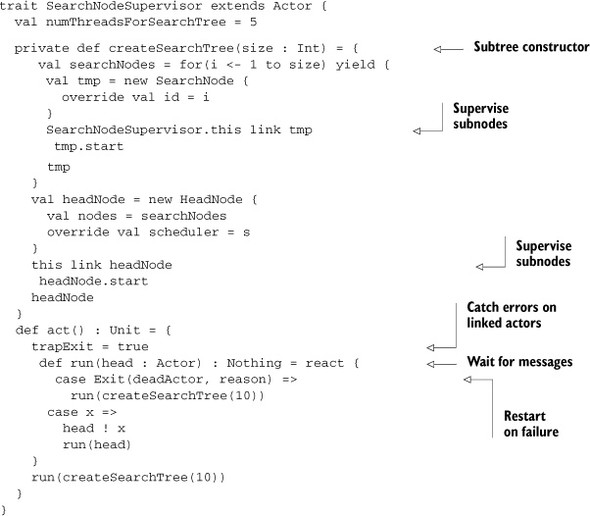
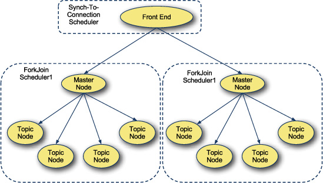
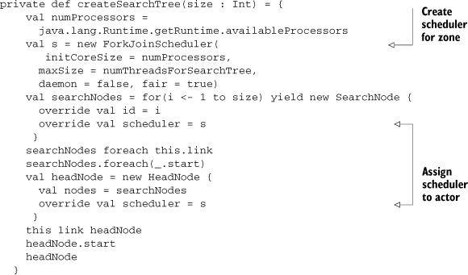
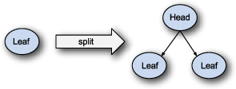

{% include JB/setup %}
{% raw %}
<div>

<div class="calibre5"></div><h2 class="chapter" id="ch09">Chapter 9. <a id="ch09__title" class="calibre6"></a>Actors
      </h2>
      <p class="calibre2"> </p><table cellspacing="5" width="100%" border="1" class="calibre10"><colgroup class="calibre19"><col width="550" class="calibre12"/></colgroup><tbody class="calibre13"><tr class="calibre14"><td class="calibre20"/>
            </tr></tbody></table><div class="calibre4">
         
         <b id="ch09sb01" class="calibre21">In this chapter</b>
         
         <p class="calibre22"></p>
         <ul class="calibre23"><li class="calibre24"><a id="iddle1062" class="calibre25"></a>General design principles using actors
            </li>
            
            <li class="calibre24">Knowing the difference between react and receive</li>
            
            <li class="calibre24">Using typed communication and sealed message protocols</li>
            
            <li class="calibre24">Limiting failures to zones using supervisors</li>
            
            <li class="calibre24">Limiting starvation to zones using schedulers</li>
            
         </ul></div>
      <table cellspacing="5" width="100%" border="1" class="calibre10"><colgroup class="calibre19"><col width="550" class="calibre12"/></colgroup><tbody class="calibre13"><tr class="calibre14"><td class="calibre20"/>
            </tr></tbody></table><p class="calibre2"> </p><p class="noind">Actors are an abstraction on a synchronous processes. They communicate to the external world by sending and receiving messages.
         An actor will process received messages sequentially in the order they’re received, but will handle only one message at a
         time. This is critical, because it means that actors can maintain state without explicit locks. Actors can also be asynchronous
         or synchronous. Most actors won’t block a thread when waiting for messages, although this can be done if desired. The default
         behavior for actors is to share threads among each other when handling messages. This means a small set of threads could support
         a large number of actors, given the right behavior.
      </p>
      
      <p class="noind"><a id="iddle1900" class="calibre25"></a>In fact, actors are great state machines. They accept a limited number of input messages and update their internal state.
         All communication is done through messages and each actor stands alone.
      </p>
      
      <p class="noind">But actors won’t solve all issues your system faces. You have to know how to use them.</p>
      
      
      <h3 id="ch09lev1sec1" class="calibre17"><a id="ch09lev1sec1__title" class="calibre6"></a>9.1. Know when to use actors
      </h3>
      
      <p class="noind">Actors aren’t parallelization factories; they process their messages in single-threaded fashion. They work best when work
         is conceptually split and each actor can handle a portion of the work. If the application needs to farm many similar tasks
         out for processing, this requires a large pool of actors to see any concurrency benefits.
      </p>
      
      <p class="noind">Actors and I/O should be interleaved carefully. Asynchronous I/O and actors are a natural pairing, as the execution models
         for these are similar. Using an actor to perform blocking I/O is asking for trouble. That actor can starve other actors during
         this processing. This can be mitigated, as we’ll discuss in <a href="#ch09lev1sec4" class="calibre7">section 9.4</a>.
      </p>
      
      <p class="noind">Although many problems can be successfully modeled in actors, some will benefit more. The architecture of a system designed
         to use actors will also change fundamentally. Rather than relying on classic Model-View-Controller and client-based parallelism,
         an actors system parallelizes pieces of the architecture and performs all communication asynchronously.
      </p>
      
      <p class="noind">Let’s look at a canonical example of a good system design using actors. This example uses several tools found in the old Message
         Passing Interface (MPI) specification used in supercomputing. MPI is worth a look, as it holds a lot of concepts that have
         naturally translated into actor-based systems.
      </p>
      
      
      <h4 id="ch09lev2sec1" class="calibre28">9.1.1. <a id="ch09lev2sec1__title" class="calibre25"></a>Using actors to search
      </h4>
      
      <p class="noind">Let’s design a classic search program. This program has a set of documents that live in some kind of search index. Queries
         are accepted from users and the index is searched. Documents are scored and the highest scored documents are returned to the
         users. To optimize the query time, a scatter-gather approach is used.
      </p>
      
      <p class="noind">The scatter-gather approach involves two phases of the query: <i class="calibre9">scatter</i> and <i class="calibre9">gather</i> (see <a href="#ch09fig01" class="calibre7">figure 9.1</a>).
      </p>
      
      
      
      <h5 class="notetitle" id="ch09fig01">Figure 9.1. <a id="ch09fig01__title" class="calibre25"></a>Scatter phase
      </h5>
      
      
      
      <p class="center1"></p>
      
      
      
      <p class="noind">The first phase, scatter, is when the query is farmed out to a set of subnodes. Classically, these subnodes are divided topically
         and store documents about their topic. These nodes are responsible for finding relevant documents for the query and returning
         the results, as shown in <a href="#ch09fig02" class="calibre7">figure 9.2</a>.
      </p>
      
      
      <p class="noind"></p>
      
      
      <h5 class="notetitle" id="ch09fig02">Figure 9.2. <a id="ch09fig02__title" class="calibre25"></a>Gather phase
      </h5>
      
      
      
      <p class="center1"></p>
      
      
      
      <p class="noind"><a id="iddle1046" class="calibre25"></a><a id="iddle1438" class="calibre25"></a><a id="iddle1651" class="calibre25"></a><a id="iddle1903" class="calibre25"></a><a id="iddle1912" class="calibre25"></a>The second phase, gather, is when all the topic nodes respond to the main node with their results. These are pruned and returned
         for the entire query.
      </p>
      
      <p class="noind">Let’s start by creating a <kbd class="calibre18">SearchQuery</kbd> message that can be sent among the actors.
      </p>
      
      <pre id="PLd0e24473" class="calibre8">case class SearchQuery(query : String, maxResults : Int)</pre>
      
      <p class="noind">The <kbd class="calibre18">SearchQuery</kbd> class has two parameters. The first is the actual query, and the second is the maximum number of results that should be returned.
         We’ll implement one of the topic nodes to handle this message.
      </p>
      
      <pre id="PLd0e24485" class="calibre8">trait SearchNode extends Actor {
  type ScoredDocument = (Double, String)
  val index : HashMap[String, Seq[ScoredDocument]] = ...
  override def act = Actor.loop {
    react {
      case SearchQuery(query, maxResults) =&gt;
        reply index.get(query).getOrElse(Seq()).take(maxResults)
    }
  }
}</pre>
      
      <p class="noind">The <kbd class="calibre18">Search</kbd> node defines the type <kbd class="calibre18">Scored Document</kbd> to be a tuple of a double score and a string document. The index is defined as a <kbd class="calibre18">HashMap</kbd> of a query string to scored documents. The index is implemented such that it pulls in a different set of values for each
         <kbd class="calibre18">SearchNode</kbd> created. The full implementation of the index is included in the source code for the book.
      </p>
      
      <p class="noind">The <kbd class="calibre18">act</kbd> method on <kbd class="calibre18">SearchNode</kbd> contains its core behavior. When it receives a <kbd class="calibre18">SearchQuery</kbd> message, it looks for results in its index. It replies to the sender of the <kbd class="calibre18">SearchQuery</kbd> all of these results in a truncated manner so that only <kbd class="calibre18">maxResults</kbd> are returned.
      </p>
      <p class="calibre2"> </p><table cellspacing="5" width="100%" border="1" class="calibre10"><colgroup class="calibre19"><col width="550" class="calibre12"/></colgroup><tbody class="calibre13"><tr class="calibre14"><td class="calibre20"/>
            </tr></tbody></table><h5 class="notetitle" id="ch09note01">React Versus Receive</h5>
      
      
      
      <p class="noindclose"><a id="iddle1003" class="calibre25"></a><a id="iddle1096" class="calibre25"></a><a id="iddle1347" class="calibre25"></a><a id="iddle1373" class="calibre25"></a><a id="iddle1409" class="calibre25"></a><a id="iddle1447" class="calibre25"></a><a id="iddle1806" class="calibre25"></a><a id="iddle1814" class="calibre25"></a><a id="iddle1829" class="calibre25"></a><a id="iddle1909" class="calibre25"></a><a id="iddle1943" class="calibre25"></a><a id="iddle2005" class="calibre25"></a><a id="iddle2118" class="calibre25"></a>The <kbd class="calibre18">SearchNode</kbd> actor uses the <kbd class="calibre18">react</kbd> method for accepting messages. The actors library also supports a <kbd class="calibre18">receive</kbd> method. These methods differ in that <kbd class="calibre18">react</kbd> will defer the execution of the actor until there is a message available. The <kbd class="calibre18">receive</kbd> method will block the current thread until a message is available. Unless absolutely necessary, <kbd class="calibre18">receive</kbd> should be avoided to improve the parallelism in the system.
      </p>
      
      <table cellspacing="5" width="100%" border="1" class="calibre10"><colgroup class="calibre19"><col width="550" class="calibre12"/></colgroup><tbody class="calibre13"><tr class="calibre14"><td class="calibre20"/>
            </tr></tbody></table><p class="calibre2"> </p><p class="noind">Now let’s implement the <kbd class="calibre18">HeadNode</kbd> actor that’s responsible for scattering queries and gathering results.
      </p>
      
      <pre id="PLd0e24623" class="calibre8">trait HeadNode extends Actor {
  val nodes : Seq[SearchNode] = ...
  override def act = Actor.loop {
    react {
      case s @ SearchQuery(_, maxResults) =&gt;
        val futureResults = nodes map (n =&gt; n !! s)
        def combineResults(current : Seq[(Double, String)],
                            next : Seq[(Double, String)]) =
            (current ++ next).view sortBy (_._1) take maxResults force
        reply futureResults.foldLeft(Seq[ScoredDocument]()) {
          (current, next) =&gt;
            combineResults(current,
                          next().asInstanceOf[Seq[ScoredDocument])
        }
    }
  }
}</pre>
      
      <p class="noind">The <kbd class="calibre18">HeadNode</kbd> actor is a bit more complicated. It defines a member containing all the <kbd class="calibre18">SearchNodes</kbd> that it can scatter to. It then defines its core behavior in the <kbd class="calibre18">act</kbd> method. The <kbd class="calibre18">HeadNode</kbd> waits for <kbd class="calibre18">SearchQuery</kbd> messages. When it receives one, it sends it to all the <kbd class="calibre18">SearchNode</kbd> children awaiting a future result. The <kbd class="calibre18">!!</kbd> method on actors will send a message and expect a reply at some future time. This reply is called a <kbd class="calibre18">Future</kbd>. The <kbd class="calibre18">HeadNode</kbd> can block until the reply is received by calling the <kbd class="calibre18">apply</kbd> method on the <kbd class="calibre18">Future</kbd>. This is exactly what it does in the <kbd class="calibre18">foldLeft</kbd> over these futures. The <kbd class="calibre18">HeadNode</kbd> is aggregating the <kbd class="calibre18">next</kbd> future result with the current query results result to produce the final result list. This final result list is sent to the
         original query sender using the <kbd class="calibre18">reply</kbd> method.
      </p>
      <p class="calibre2"> </p><table cellspacing="5" width="100%" border="1" class="calibre10"><colgroup class="calibre19"><col width="550" class="calibre12"/></colgroup><tbody class="calibre13"><tr class="calibre14"><td class="calibre20"/>
            </tr></tbody></table><h5 class="notetitle" id="ch09note02">Using View to Combine Results</h5>
      
      
      <p class="noindclose">In the example the <kbd class="calibre18">view</kbd> and <kbd class="calibre18">force</kbd> methods are used around a set of collection methods. Although they offer no benefit for the <kbd class="calibre18">sortBy</kbd> method, in practice the <kbd class="calibre18">take</kbd> method is usually used, and the <kbd class="calibre18">view</kbd> and <kbd class="calibre18">force</kbd> methods can help improve efficiency by avoiding the creation of intermediate collections.
      </p>
      
      <table cellspacing="5" width="100%" border="1" class="calibre10"><colgroup class="calibre19"><col width="550" class="calibre12"/></colgroup><tbody class="calibre13"><tr class="calibre14"><td class="calibre20"/>
            </tr></tbody></table><p class="calibre2"> </p><p class="noind">The system now has a scatter-gather search tree for optimal searching. But there’s still a lot to be desired. The casting
         of the result type in the <kbd class="calibre18">HeadNode</kbd> actor is less than ideal in a statically typed language like Scala. Also, the <kbd class="calibre18">HeadNode</kbd> blocks for an entire <kbd class="calibre18">SearchQuery</kbd>. This means that the amount of parallelism in the system could be <a id="iddle1059" class="calibre25"></a><a id="iddle1382" class="calibre25"></a><a id="iddle1528" class="calibre25"></a><a id="iddle1745" class="calibre25"></a><a id="iddle1820" class="calibre25"></a><a id="iddle1898" class="calibre25"></a>expanded so that slow-running queries don’t starve faster queries. Finally, the search tree has no failure handling. If a
         bad index or query string occurs, the whole system will crash.
      </p>
      
      <p class="noind">Actors can improve these downsides. Let’s start with fixing the type-safety issues.</p>
      
      
      
      
      <h3 id="ch09lev1sec2" class="calibre17"><a id="ch09lev1sec2__title" class="calibre6"></a>9.2. Use typed, transparent references
      </h3>
      
      <p class="noind">One of the biggest dangers in the Scala standard actors library is to give actors references to each other. This can lead
         to accidentally calling a method defined on another actor instead of sending a message to that actor. Although that may seem
         innocuous to some, this behavior can break an actors system, especially if you use locking. Actors are optimized by minimizing
         locking to a few minor locations, such as when scheduling and working with a message buffer. Introducing more locking can
         easily lead to deadlocks and frustration.
      </p>
      
      <p class="noind">Another disadvantage to passing direct references to actors is transparency, where the location of an actor is tied in to
         another actor. This locks them in place where they are. The actors can no longer migrate to other locations, either in memory
         or on the network, severely limiting the system’s ability to handle failure. We’ll discuss this in detail in <a href="#ch09lev1sec3" class="calibre7">section 9.3</a>.
      </p>
      
      <p class="noind">Another downside to sending actors directly in the Scala standard library is that actors are untyped. This means that all
         the handy type system utilities you could leverage are thrown out the window when using raw actors. Specifically, the compiler’s
         ability to find exhausting pattern matches using sealed traits.
      </p>
      <p class="calibre2"> </p><table cellspacing="5" width="100%" border="1" class="calibre10"><colgroup class="calibre19"><col width="550" class="calibre12"/></colgroup><tbody class="calibre13"><tr class="calibre14"><td class="calibre20"/>
            </tr></tbody></table><h5 class="notetitle" id="ch09note03">Using Sealed Traits for Message Apis</h5>
      
      
      <p class="noindclose">It’s a best practice in Scala to define message APIs for actors within a sealed trait hierarchy. This has the benefit of defining
         every message that an actor can handle and keeping them in a central location for easy lookup. With a bit of machinery, the
         compiler can be coerced to warn when an actor doesn’t handle its complete messaging API.
      </p>
      
      <table cellspacing="5" width="100%" border="1" class="calibre10"><colgroup class="calibre19"><col width="550" class="calibre12"/></colgroup><tbody class="calibre13"><tr class="calibre14"><td class="calibre20"/>
            </tr></tbody></table><p class="calibre2"> </p><p class="noind">The Scala standard library provides two mechanisms for enforcing type safety and decoupling references from directly using
         an actor: the <kbd class="calibre18">InputChannel</kbd> and <kbd class="calibre18">Output-Channel</kbd> traits.
      </p>
      
      <p class="noind">The <kbd class="calibre18">OutputChannel</kbd> trait is used to send messages to actors. This is the interface that should be passed to other actors, and it looks like
         this:
      </p>
      
      <pre id="PLd0e24796" class="calibre8">trait OutputChannel[-Msg] {
  def !(msg: Msg @unique): Unit
  def send(msg: Msg @unique, replyTo: OutputChannel[Any]): Unit
  def forward(msg: Msg @unique): Unit
  def receiver: Actor
}</pre>
      
      <p class="noind">The <kbd class="calibre18">OutputChannel</kbd> trait is templatized by the type of messages that can be sent to it. It supports sending messages via three methods: <kbd class="calibre18">!</kbd>, <kbd class="calibre18">send</kbd>, and <kbd class="calibre18">forward</kbd>. The <kbd class="calibre18">!</kbd> method sends a message to an actor and doesn’t expect a reply. The <kbd class="calibre18">send</kbd> method sends a message to an actor and attaches an output channel that the actor can respond to. The <a id="iddle1004" class="calibre25"></a><a id="iddle1005" class="calibre25"></a><a id="iddle1049" class="calibre25"></a><a id="iddle1410" class="calibre25"></a><a id="iddle1448" class="calibre25"></a><a id="iddle1816" class="calibre25"></a><a id="iddle1830" class="calibre25"></a><a id="iddle1887" class="calibre25"></a><a id="iddle1908" class="calibre25"></a><a id="iddle1910" class="calibre25"></a><a id="iddle1913" class="calibre25"></a><kbd class="calibre18">forward</kbd> method is used to send a message to another actor such that the original reply channel is preserved.
      </p>
      
      <p class="noind">The <kbd class="calibre18">receiver</kbd> method on <kbd class="calibre18">OutputChannel</kbd> returns the raw actor used by the <kbd class="calibre18">Output-Channel</kbd>. You should avoid this method.
      </p>
      
      <p class="noind">Notice the methods that <kbd class="calibre18">OutputChannel</kbd> doesn’t have: <kbd class="calibre18">!!</kbd> and <kbd class="calibre18">!?</kbd>. In the Scala standard library, <kbd class="calibre18">!!</kbd> and <kbd class="calibre18">!?</kbd> are used to send messages and expect a reply in the current scope. This is done through the creation of an anonymous actor
         that can receive the response. This anonymous actor is used as the <kbd class="calibre18">replyTo</kbd> argument for a send call. The <kbd class="calibre18">!?</kbd> method blocks the current thread until a response is received. The <kbd class="calibre18">!!</kbd> method creates a <kbd class="calibre18">Future</kbd> object, which stores the result when it occurs. Any attempt to retrieve the result blocks the current thread until the result
         is available. <kbd class="calibre18">Futures</kbd> do provide a <kbd class="calibre18">map</kbd> method. This attaches a function that can be run on the value in the future when it’s available without blocking the current
         thread.
      </p>
      
      <p class="noind">In general, using <kbd class="calibre18">!!</kbd> and <kbd class="calibre18">!?</kbd> is discouraged. The potential for deadlocking a thread is great. But when used lightly or with caution, these methods can
         be helpful. It’s important to understand the size and scope of the project and the type of problem being solved. If the problem
         is too complex to ensure <kbd class="calibre18">!!</kbd> and <kbd class="calibre18">!?</kbd> behave appropriately, avoid them altogether.
      </p>
      
      <p class="noind">Let’s modify the scatter-gather example to communicate using <kbd class="calibre18">OutputChannels</kbd>.
      </p>
      
      
      <h4 id="ch09lev2sec2" class="calibre28">9.2.1. <a id="ch09lev2sec2__title" class="calibre25"></a>Scatter-Gather with OutputChannel
      </h4>
      
      <p class="noind">The scatter-gather example requires two changes to promote lightweight typesafe references: removing the direct <kbd class="calibre18">Actor</kbd> references in <kbd class="calibre18">HeadNode</kbd> and changing the query responses to go through a collection channel. The first change is simple.
      </p>
      
      <pre id="PLd0e24965" class="calibre8">/** The head node for the scatter/gather algorithm. */
trait HeadNode extends Actor {
  val nodes : Seq[OutputChannel[SearchNodeMessage]]
  override def act : Unit = {
    ...
  }
}</pre>
      
      <p class="noind">The nodes member of the <kbd class="calibre18">HeadNode</kbd> actor is changed to be a <kbd class="calibre18">Seq[OutputChannel [SearchNodeMessage]]</kbd>. This change ensures that the <kbd class="calibre18">HeadNode</kbd> will only send <kbd class="calibre18">SearchNodeMessage</kbd> messages to <kbd class="calibre18">SearchNode</kbd>s. The <kbd class="calibre18">SearchNodeMessage</kbd> type is a new sealed trait that will contain all messages that can be sent to <kbd class="calibre18">SearchNodes</kbd>.
      </p>
      
      <p class="noind">The second change is a bit more involved. Rather than directly responding to the sender of the <kbd class="calibre18">SearchQuery</kbd>, let’s allow an output channel to be passed along with the <kbd class="calibre18">SearchQuery</kbd> that can receive results.
      </p>
      
      <pre id="PLd0e25004" class="calibre8">sealed trait SearchNodeMessage
case class SearchQuery(query : String,
                      maxDocs : Int,
                      gatherer : OutputChannel[QueryResponse])
  extends SearchNodeMessage</pre>
      
      <p class="noind"><a id="iddle1799" class="calibre25"></a><a id="iddle1904" class="calibre25"></a>The <kbd class="calibre18">SearchQuery</kbd> message now has three parameters: the query, the maximum number of results, and the output channel that will receive the
         query results. The <kbd class="calibre18">Search-Query</kbd> message now extends from the <kbd class="calibre18">SearchNodeMessage</kbd>. The new <kbd class="calibre18">SearchNodeMessage</kbd> trait is sealed, ensuring that all messages that can be sent to the <kbd class="calibre18">SearchNode</kbd> are defined in the same file. Let’s update the <kbd class="calibre18">SearchNodes</kbd> to handle the updated <kbd class="calibre18">SearchQuery</kbd> message.
      </p>
      
      <pre id="PLd0e25045" class="calibre8">trait SearchNode extends Actor {
  lazy val index : HashMap[String, Seq[(Double, String)]] = ...

  override def act = Actor.loop {
    react {
      case SearchQuery(q, maxDocs, requester) =&gt;
        val result = for {
          results &lt;- index.get(q).toList
          resultList &lt;- results
        } yield resultList
        requester ! QueryResponse(result.take(maxDocs))
    }
  }
}</pre>
      
      <p class="noind">The <kbd class="calibre18">SearchNode</kbd> trait is the same as before except for the last line in the react call. Instead of calling reply with the <kbd class="calibre18">QueryResponse</kbd>, the <kbd class="calibre18">SearchNode</kbd> sends the response to the requestor parameter of the query.
      </p>
      
      <p class="noind">This new behavior means that the head node can’t just send the same <kbd class="calibre18">SearchQuery</kbd> message to the <kbd class="calibre18">SearchNode</kbd>s. Let’s rework the communication of the system, as shown in <a href="#ch09fig03" class="calibre7">figure 9.3</a>.
      </p>
      
      
      
      <h5 class="notetitle" id="ch09fig03">Figure 9.3. <a id="ch09fig03__title" class="calibre25"></a>Modified scatter-gather search
      </h5>
      
      
      
      <p class="center1"></p>
      
      
      
      <p class="noind"><a id="iddle1047" class="calibre25"></a><a id="iddle1050" class="calibre25"></a><a id="iddle1132" class="calibre25"></a><a id="iddle1203" class="calibre25"></a><a id="iddle1243" class="calibre25"></a><a id="iddle1411" class="calibre25"></a><a id="iddle1649" class="calibre25"></a><a id="iddle1650" class="calibre25"></a><a id="iddle1746" class="calibre25"></a>The new design has a <kbd class="calibre18">Gatherer</kbd> actor. This actor is responsible for receiving all results from <kbd class="calibre18">SearchNodes</kbd> and aggregating them before sending back to the front end. The <kbd class="calibre18">Gatherer</kbd> could be implemented in many ways. One advanced implementation could use prediction to stream results to the front end as
         they’re returned, attempting to ensure high priority results get sent immediately. For now, let’s implement the <kbd class="calibre18">GathererNode</kbd> such that it aggregates all results first and sends them to the front end.
      </p>
      
      <pre id="PLd0e25149" class="calibre8">trait GathererNode extends Actor {
  val maxDocs: Int
  val maxResponses: Int
  val client: OutputChannel[QueryResponse]
  ..
}</pre>
      
      <p class="noind">The <kbd class="calibre18">GathererNode</kbd> is defined as an <kbd class="calibre18">Actor</kbd>. It has three members. The <kbd class="calibre18">maxDocs</kbd> member is the maximum number of documents to return from a query. The <kbd class="calibre18">maxResponses</kbd> member is the maximum number of nodes that can respond before sending results for a query. The <kbd class="calibre18">client</kbd> member is the <kbd class="calibre18">OutputChannel</kbd> where results should be sent. The <kbd class="calibre18">GathererNode</kbd> should be tolerant of errors or timeouts in the search tree. To do this, it should wait a maximum of one second for each
         response before returning the query results. Let’s implement the <kbd class="calibre18">act</kbd> method for the <kbd class="calibre18">GathererNode</kbd>.
      </p>
      
      <pre id="PLd0e25185" class="calibre8">def act = {
  def combineResults(current: Seq[(Double, String)],
                     next: Seq[(Double, String)]) =
    (current ++ next).view.sortBy(_._1).take(maxDocs).force

  def bundleResult(curCount: Int,
                   current: Seq[(Double, String)]): Unit =
    if (curCount &lt; maxResponses) {
      receiveWithin(1000L) {
        case QueryResponse(results) =&gt;
          bundleResult(curCount+1, combineResults(current, results))
        case TIMEOUT =&gt;
          bundleResult(maxResponses, current)
      }
    } else {
      client ! QueryResponse(current)
    }
  bundleResult(0, Seq())
}</pre>
      
      <p class="noind">The <kbd class="calibre18">act</kbd> method defines the core behavior of this actor. The <kbd class="calibre18">combineResults</kbd> helper method is used to take two sets of query results and aggregate them such that the highest scored results remain. This
         method also limits the number of results returned to be the same as the <kbd class="calibre18">maxDocs</kbd> member variable.
      </p>
      
      <p class="noind">The <kbd class="calibre18">bundleResult</kbd> method is the core behavior of this actor. The <kbd class="calibre18">curCount</kbd> parameter is the number of responses seen so far. The current parameter is the aggregate of all collected query results from
         all nodes. The <kbd class="calibre18">bundleResult</kbd> method first checks to see if the number of responses is less than the maximum expected results. If so, it calls <a id="iddle1449" class="calibre25"></a><a id="iddle1818" class="calibre25"></a><a id="iddle1852" class="calibre25"></a><a id="iddle1914" class="calibre25"></a><kbd class="calibre18">receiveWithin</kbd> to wait for another response. The <kbd class="calibre18">receiveWithin</kbd> method will wait for a given time for messages before sending the special <kbd class="calibre18">scala.actors.TIMEOUT</kbd> message. If another query result is received, the method combines the result with the previous set of results and recursively
         calls itself with bumped values. If receiving the message times out, the <kbd class="calibre18">bundleResult</kbd> method calls itself with the number of responses set to the maximum value. If the number of responses is at or above the
         maximum, the current query results are sent to the client.
      </p>
      
      <p class="noind">Finally, the <kbd class="calibre18">act</kbd> method is implemented by calling the <kbd class="calibre18">bundleResult</kbd> method with an initial count of zero and an empty <kbd class="calibre18">Seq</kbd> of results.
      </p>
      
      <p class="noind">The <kbd class="calibre18">GathererNode</kbd> stops trying to receive messages after the query results have been sent. This effectively ends the life of the actor and
         allows the node to become garbage-collected. The Scala standard actors library implements its own garbage collection routine
         that will have to remove references to the <kbd class="calibre18">GathererNode</kbd> before the JVM garbage collection can recover memory.
      </p>
      
      <p class="noind">The last piece of implementation required is to adapt the <kbd class="calibre18">HeadNode</kbd> to use the <kbd class="calibre18">GathererNode</kbd> instead of collecting all the results in futures.
      </p>
      
      
      <p class="center1"></p>
      
      
      <p class="noind">The <kbd class="calibre18">HeadNode</kbd> has been changed so that when it receives a <kbd class="calibre18">SearchQuery</kbd>, it constructs a new <kbd class="calibre18">GathererNode</kbd>. The gatherer is instantiated using the parameters from the <kbd class="calibre18">SearchQuery</kbd>. The gatherer must also be started so that it can receive messages. The last piece is to send a new <kbd class="calibre18">SearchQuery</kbd> message to all the <kbd class="calibre18">SearchNodes</kbd> with the <kbd class="calibre18">OutputChannel</kbd> set to the gatherer.
      </p>
      
      <p class="noind">Splitting the scatter and gather computations into different actors can help with throughput in the whole system. The <kbd class="calibre18">HeadNode</kbd> actor only has to deal with incoming messages and do any potential preprocessing of queries before scattering them. The <kbd class="calibre18">GathererNode</kbd> can focus on receiving responses from the search tree. A <kbd class="calibre18">Gatherer</kbd> <a id="iddle1058" class="calibre25"></a><a id="iddle1061" class="calibre25"></a><a id="iddle1319" class="calibre25"></a><a id="iddle1624" class="calibre25"></a><a id="iddle1888" class="calibre25"></a><a id="iddle1905" class="calibre25"></a>node could even be implemented such that it stopped <kbd class="calibre18">SearchNodes</kbd> from performing lookups if enough quality results were received. Most importantly, if there’s any kind of error gathering
         the results of one particular query, it won’t adversely affect any other query in the system.
      </p>
      
      <p class="noind">This is a key design issue with actors. Failures should be isolated as much as possible. This can be done through the creation
         of failure zones.
      </p>
      
      
      
      
      <h3 id="ch09lev1sec3" class="calibre17"><a id="ch09lev1sec3__title" class="calibre6"></a>9.3. Limit failures to zones
      </h3>
      
      <p class="noind">Architecting and rationalizing distributed architecture can be difficult. Joe Armstrong, the creator of Erlang, popularized
         the notion of actors and how to handle failure. The recommended strategy for working with actors is to let them fail and let
         another actor, called a <i class="calibre9">supervisor</i> handle that failure. The supervisor is responsible for bringing the system it manages back into a working state.
      </p>
      
      <p class="noind">Looking at supervisors and actors from a topological point of view, supervisors create zones of failure for the actors they
         manage. The actors in a system can be partitioned by the supervisors such that if one section of the system goes down, the
         supervisor has a chance to prevent the failure from reaching the rest of the system. Each supervisor actor can itself have
         a supervisor actor, creating nested zones of failure.
      </p>
      
      <p class="noind">The error handling of supervisors is similar to exception handling. A supervisor should handle any failure that it knows how
         to, and bubble up those it doesn’t to outer processes. If no supervisor can handle the error, then this would bring down the
         entire system, so bubbling up errors should be done carefully!
      </p>
      
      <p class="noind">Supervisors can be simpler to write than exception handling code. With exception handling, it’s difficult to know if a <kbd class="calibre18">try-catch</kbd> block contained any state-changing code and whether it can be retired. With supervisors, if an actor is misbehaving, it can
         restart the portion of the system that’s dependent on that actor. Each actor can be passed an initial good state and continue
         processing messages.
      </p>
      
      <p class="noind">Notice the relationship between the supervisor of an actor and the creator of the actor. If the supervisor needs to recreate
         an actor upon destruction, the supervisor is also the ideal candidate to start the actor when the system initializes. This
         allows all the initialization logic to live in the same location. Supervisors may also need to act as proxy to the subsystem
         they manage. In the event of failure, the supervisor may need to buffer messages to a subsystem until after it has recovered
         and can begin processing again.
      </p>
      
      <p class="noind">Supervisors are created differently in the various Scala actor libraries. In the core library, supervisors are created through
         the <kbd class="calibre18">link</kbd> method. The Akka actors library provides many default supervisor implementations and mechanisms of wiring actors and supervisors
         together. One thing that’s common across actor libraries is that supervisors are supported and failure zones are encouraged.
      </p>
      
      
      <h4 id="ch09lev2sec3" class="calibre28">9.3.1. <a id="ch09lev2sec3__title" class="calibre25"></a>Scatter-Gather failure zones
      </h4>
      
      <p class="noind">Let’s adapt the scatter-gather example to include failure zones. The first failure zone should cover the <kbd class="calibre18">HeadNode</kbd> and <kbd class="calibre18">SearchNode</kbd> actors. Upon failure, the supervisor can reload a failing search node and wire it back into the head node. The second failure
         zone should cover the <kbd class="calibre18">FrontEnd</kbd> actor and the supervisors of the first failure zone. In the event of failure in this outer zone, the supervisor can restart
         any failed inner zones and inform the front end of the new actors. A topological view of this failure handling is shown in
         <a href="#ch09fig04" class="calibre7">figure 9.4</a>.
      </p>
      
      
      <p class="noind"></p>
      
      
      <h5 class="notetitle" id="ch09fig04">Figure 9.4. <a id="ch09fig04__title" class="calibre25"></a>Failure zones for scatter-gather example
      </h5>
      
      <p class="center1"></p>
      
      <p class="calibre2"> </p><table cellspacing="5" width="100%" border="1" class="calibre10"><colgroup class="calibre19"><col width="550" class="calibre12"/></colgroup><tbody class="calibre13"><tr class="calibre14"><td class="calibre20"/>
            </tr></tbody></table><div class="calibre4">
         
         <b id="ch09sb02" class="calibre21">Rule 21: Design for failure with topological zones</b>
         
         <p class="noind"><a id="iddle1383" class="calibre25"></a>When designing with actors, it’s important to prepare what zones are allowed to fail separately. The system should be designed
            such that any one zone does not take down the entire application.
         </p>
         
      </div>
      <table cellspacing="5" width="100%" border="1" class="calibre10"><colgroup class="calibre19"><col width="550" class="calibre12"/></colgroup><tbody class="calibre13"><tr class="calibre14"><td class="calibre20"/>
            </tr></tbody></table><p class="calibre2"> </p><p class="noind">Failure Zones 1 and 2 in the diagram show the <kbd class="calibre18">HeadNode</kbd> and <kbd class="calibre18">SearchNode</kbd> failure zones for two parallel search hierarchies. The supervisor for these zones is responsible for restarting the entire
         tree, or a particular <kbd class="calibre18">SearchNode</kbd>, on failure. Zones 1 and 2 are each encompassed in Zone 3. This zone manages the search on the front end. In the event of
         failure, it restarts the underlying search trees or the front end as needed.
      </p>
      
      <p class="noind">We’ll start by defining the supervisor for the search nodes:</p>
      
      
      
      <h5 class="notetitle" id="ch09list1">Listing 9.1. <a id="ch09list1__title" class="calibre25"></a>Supervisor for search nodes
      </h5>
      
      <p class="center1"></p>
      
      
      <p class="noind"><a id="iddle1048" class="calibre25"></a><a id="iddle1241" class="calibre25"></a><a id="iddle1625" class="calibre25"></a><a id="iddle1911" class="calibre25"></a>The <kbd class="calibre18">SearchNodeSupervisor</kbd> contains two methods: <kbd class="calibre18">createSearchTree</kbd> and <kbd class="calibre18">act</kbd>. The <kbd class="calibre18">create-SearchTree</kbd> is responsible for instantiating nodes of the search tree and returning the top node. This method iterates over the desired
         size of the tree and creates the <kbd class="calibre18">SearchNode</kbd> class from the previous examples. Remember that each <kbd class="calibre18">SearchNode</kbd> uses its assigned ID to load a set of indexed documents and make them available for queries. Each search node created is
         linked to the supervisor. In the Scala standard library actors, linking is what creates a supervisor hierarchy. Linking two
         actors means that if one fails, both are killed. It also allows one of them to trap errors from the other. This is done from
         the call to <kbd class="calibre18">trapExit = true</kbd> in the <kbd class="calibre18">act</kbd> method.
      </p>
      <p class="calibre2"> </p><table cellspacing="5" width="100%" border="1" class="calibre10"><colgroup class="calibre19"><col width="550" class="calibre12"/></colgroup><tbody class="calibre13"><tr class="calibre14"><td class="calibre20"/>
            </tr></tbody></table><div class="calibre4">
         
         <b id="ch09sb03" class="calibre21">Common linking pitfalls</b>
         
         <p class="noind">The <kbd class="calibre18">link</kbd> method has two restrictions that simplify its use.
         </p>
         
         <p class="calibre22"></p>
         <ul class="calibre23"><li class="calibre24">It must be called from inside a live actor—that is, from the <kbd class="calibre18">act</kbd> method or one of the continuations passed to react.
            </li>
            
            <li class="calibre24">It should be called on the supervisor with the other actor as the method argument.</li>
            
         </ul><p class="noind">Because <kbd class="calibre18">link</kbd> alters the behavior of failure handling, it needs to lock both actors it operates against. Because of this synchronization,
            it’s possible to deadlock when waiting for locks. Ordering the locking behavior can prevent this behavior. The <kbd class="calibre18">link</kbd> method also requires, through runtime asserts, that it’s called against the current live actor. The actor must be actively
            running in its scheduled thread. This means linking should be done <i class="calibre9">internal</i> to the supervisor actor. This is why all the topological code is pushed down into the supervisor and why it acts as a natural
            proxy to the actors it manages.
         </p>
         
      </div>
      <table cellspacing="5" width="100%" border="1" class="calibre10"><colgroup class="calibre19"><col width="550" class="calibre12"/></colgroup><tbody class="calibre13"><tr class="calibre14"><td class="calibre20"/>
            </tr></tbody></table><p class="calibre2"> </p><p class="noind">The second method is the standard library actor’s <kbd class="calibre18">act</kbd> method. This defines the core behavior of the <a id="iddle1256" class="calibre25"></a><a id="iddle1450" class="calibre25"></a><a id="iddle1807" class="calibre25"></a><a id="iddle1842" class="calibre25"></a>supervisor actor. The first line here is the <kbd class="calibre18">trapExit = true</kbd>, which allows this actor to catch errors from others. The next line is a helper function called <kbd class="calibre18">run</kbd>, which accepts one parameter, the current head actor, and calls <kbd class="calibre18">react</kbd>, which will block waiting for messages. The first message it handles is the special <kbd class="calibre18">Exit</kbd> message. An <kbd class="calibre18">Exit</kbd> message is passed if one of the linked actors fails. Notice the values that come with an <kbd class="calibre18">Exit</kbd> message: <kbd class="calibre18">deadActor</kbd> and <kbd class="calibre18">reason</kbd>. The <kbd class="calibre18">deadActor</kbd> link allows the supervisor to attempt to pull any partial state from the <kbd class="calibre18">deadActor</kbd> if needed, or remove it from any control structures as needed. Note that the <kbd class="calibre18">deadActor</kbd> is already gone and won’t be scheduled anymore at the time of receiving this message.
      </p>
      
      <p class="noind">For the <kbd class="calibre18">SearchNodeSupervisor</kbd>, when handling errors, the entire search tree is reconstructed and passed back into the <kbd class="calibre18">run</kbd> method. This may not be ideal in a real-life situation because reconstructing the entire tree could be expensive or the tree
         might be sprawled over several machines. In that case, the <kbd class="calibre18">SearchNodeSupervisor</kbd> could restart the failed node and notify the search tree of the replacement.
      </p>
      
      <p class="noind">If the <kbd class="calibre18">SearchNodeSupervisor</kbd> encounters any other message, it’s forwarded to the current <kbd class="calibre18">HeadNode</kbd>. This means that the supervisor can block incoming messages when restarting the system. When the main node crashes, the supervisor
         receives the <kbd class="calibre18">Exit</kbd> message and stops processing messages while it fixes the system. After restoring things, it will again pull messages from
         its queue and delegate them down to the search tree.
      </p>
      
      
      
      <h4 id="ch09lev2sec4" class="calibre28">9.3.2. <a id="ch09lev2sec4__title" class="calibre25"></a>General failure handling practices
      </h4>
      
      <p class="noind">The supervisor for the scatter-gather search system demonstrates ways to handle the issues of failure in an actors system.
         When designing an actors-based system and outlining failure zones, <a href="#ch09table01" class="calibre7">table 9.1</a> helps make decisions appropriate for that module.
      </p>
      
      <h5 class="notetitle" id="ch09table01">Table 9.1. <a id="ch09table01__title" class="calibre25"></a>Actor design decisions
      </h5>
      <table cellspacing="5" frame="hsides" rules="cols" cellpadding="8" width="100%" class="calibre26"><colgroup span="3" class="calibre11"><col width="180" class="calibre12"/><col width="190" class="calibre12"/><col width="180" class="calibre12"/></colgroup><thead class="calibre27"><tr class="calibre14"><th class="docTableCell1" scope="col" valign="top">
                  <p class="noind">Decision</p>
               </th>
               <th class="docTableCell1" scope="col" valign="top">
                  <p class="noind">Scatter-Gather example</p>
               </th>
               <th class="docTableCell1" scope="col" valign="top">
                  <p class="noind">Other options</p>
               </th>
            </tr></thead><tbody class="calibre13"><tr class="calibre14"><td class="docTableCell" valign="top">Providing transparent way to restart failed components</td>
               <td class="docTableCell" valign="top">Forward messages through the supervisor. If supervisor fails, restart outer failure zone.</td>
               <td class="docTableCell" valign="top">Update name service with references to actors.
                  Directly communicate new location to connected components.
               </td>
            </tr><tr class="calibre14"><td class="docTableCell" valign="top">Granularity of failure zones</td>
               <td class="docTableCell" valign="top">The entire search tree fails and restarts.</td>
               <td class="docTableCell" valign="top">Single Search node inner failure zone with Search Tree outer failure zone.</td>
            </tr><tr class="calibre14"><td class="docTableCell" valign="top">Recovery of failed actor state</td>
               <td class="docTableCell" valign="top">Actor data is statically pulled from disk. Doesn’t change during its lifetime.</td>
               <td class="docTableCell" valign="top">Periodic snapshotting to persistent store
                  Pulling live state from dead actor and sanitizing
                  Persisting state after every handled message
               </td>
            </tr></tbody></table><p class="noind">These three decisions are crucial in defining robust concurrent actor systems. The first point is the most important. Creating
         a fail-safe zone implies ensuring that if that <a id="iddle1060" class="calibre25"></a><a id="iddle1542" class="calibre25"></a><a id="iddle1889" class="calibre25"></a><a id="iddle1891" class="calibre25"></a>zone crashes and restarts, it won’t affect external zones. The Scala actors library makes it easy to lose transparency for
         actors. This can be done by passing the reference to a specific actor rather than a proxy or namespace reference.
      </p>
      
      <p class="noind">The second decision can affect the messaging API for actors. If a subsystem needs to tolerate failure of one of its actors,
         the other actors need to be updated to communicate with the replacement actor. Again, transparent actor references can be
         a boon here. For the Scala standard library, using the supervisors as proxies to sub-components is the simplest way to provide
         transparency. This means that for fine-grained failure zones, many supervisors must be created, possibly one per actor.
      </p>
      
      <p class="noind">The third decision is one not discussed in the example—that of state recovery. Most real-life actors maintain some form of
         state during their lifetimes. This state may or may not need to be reconstructed for the system to continue functioning. Although
         not directly supported in the Scala standard library, one way to ensure state sticks around is to periodically snapshot the
         actor by dumping its state to a persistent store. This could then be recovered later.
      </p>
      
      <p class="noind">A second method of keeping state would be to pull the last known state from a dead actor and sanitize it for the reconstructed
         actor. This method is risky, as the state of a previous actor isn’t in a consistent state and the sanitization process may
         not be able to recover. The sanitization process could also be hard to reason through and write. This mechanism isn’t recommended.
      </p>
      
      <p class="noind">Another mechanism for handling state is to persist the state after every message an actor receives. Although not directly
         supported by the Scala standard library, this could easily be added through a subclass of actor.
      </p>
      <p class="calibre2"> </p><table cellspacing="5" width="100%" border="1" class="calibre10"><colgroup class="calibre19"><col width="550" class="calibre12"/></colgroup><tbody class="calibre13"><tr class="calibre14"><td class="calibre20"/>
            </tr></tbody></table><h5 class="notetitle" id="ch09note04">Akka Transactors</h5>
      
      
      <p class="noindclose">The Akka actors library provides many ways to synchronize the state of live actors, one of which is transactors. Transactors
         are actors whose message handling functions are executed within a transactional context.
      </p>
      
      <table cellspacing="5" width="100%" border="1" class="calibre10"><colgroup class="calibre19"><col width="550" class="calibre12"/></colgroup><tbody class="calibre13"><tr class="calibre14"><td class="calibre20"/>
            </tr></tbody></table><p class="calibre2"> </p><p class="noind">One item not on this list is threading strategies. Because actors share threads, an actor that fails to handle its incoming
         messages could ruin the performance of other actors that share the same threading resources. The solution to this is to split
         actors into scheduling zones, similar to splitting them into failure zones.
      </p>
      
      
      
      
      <h3 id="ch09lev1sec4" class="calibre17"><a id="ch09lev1sec4__title" class="calibre6"></a>9.4. Limit overload using scheduler zones
      </h3>
      
      <p class="noind">One type of failure that a supervisor can’t handle well is thread starvation of actors. If one actor is receiving a lot of
         messages and spending a lot of CPU time processing them, it can starve other actors. The actor schedulers also don’t have
         any notion of priority. Maybe a high-priority actor in the system must respond as quickly as possible, and could get bogged
         down by lower priority actors stealing all the resources.
      </p>
      
      <p class="noind">Schedulers are the solution to this problem. A scheduler is the component responsible for sharing actors among threads. The
         scheduler selects the next actor to run and assigns it to a particular thread. In the Scala actors library, a scheduler implements
         the <kbd class="calibre18">IScheduler</kbd> interface.
      </p>
      
      <p class="noind"><a id="iddle1298" class="calibre25"></a><a id="iddle1380" class="calibre25"></a><a id="iddle1588" class="calibre25"></a><a id="iddle1591" class="calibre25"></a><a id="iddle1832" class="calibre25"></a><a id="iddle1906" class="calibre25"></a>A variety of scheduling mechanisms are available for the standard library actors, as shown in <a href="#ch09table02" class="calibre7">table 9.2</a>.
      </p>
      
      <h5 class="notetitle" id="ch09table02">Table 9.2. <a id="ch09table02__title" class="calibre25"></a>Schedulers
      </h5>
      <table cellspacing="5" frame="hsides" rules="cols" cellpadding="8" width="100%" class="calibre26"><colgroup span="2" class="calibre11"><col width="230" class="calibre12"/><col width="320" class="calibre12"/></colgroup><thead class="calibre27"><tr class="calibre14"><th class="docTableCell1" scope="col" valign="top">
                  <p class="noind">Scheduler</p>
               </th>
               <th class="docTableCell1" scope="col" valign="top">
                  <p class="noind">Purpose</p>
               </th>
            </tr></thead><tbody class="calibre13"><tr class="calibre14"><td class="docTableCell" valign="top">ForkJoinScheduler</td>
               <td class="docTableCell" valign="top">Parallelization optimized for tasks that are split up, parallelized, and recovered—that is, things that are forked for processing,
                  then joined together.
               </td>
            </tr><tr class="calibre14"><td class="docTableCell" valign="top">ResizableThreadPoolScheduler</td>
               <td class="docTableCell" valign="top">Starts up a persistent thread pool for actors. If load is increased, it’ll automatically create new threads up to an environment-specified
                  limit.
               </td>
            </tr><tr class="calibre14"><td class="docTableCell" valign="top">ExecutorScheduler</td>
               <td class="docTableCell" valign="top">Uses a java.util.concurrent.Executor to schedule actors. This allows actors to use any of the standard Java thread pools and
                  is the recommended way to assign fixed size thread pool.
               </td>
            </tr></tbody></table><p class="noind">The <kbd class="calibre18">ForkJoinScheduler</kbd> is the default scheduler for Scala actors. This is done through a nifty work-stealing algorithm where every thread has its
         own scheduler. Tasks created in a thread are added to its own scheduler. If a thread runs out of tasks, it steals work from
         another thread’s scheduler. This provides great performance for a lot of situations. The scatter-gather example is a perfect
         fit for the fork join parallel executor. Queries are distributed to each <kbd class="calibre18">SearchNode</kbd> for executions, and results are aggregated to create the final query results. The work-stealing pulls and distributes the
         forked work for a query. If the system is bogged down, it could degrade to performing similarly to a single-threaded query
         engine. Although generally efficient, the <kbd class="calibre18">ForkJoinScheduler</kbd> isn’t optimal in situations where task sizes are largely variable.
      </p>
      
      <p class="noind">The <kbd class="calibre18">ResizableThreadPoolScheduler</kbd> constructs a pool of threads that share the processing of messages for a set of actors. Scheduling is done on a first-come,
         firstserve basis. If the workload starts to grow beyond what the current thread pool can handle, the scheduler will increase
         the available threads in the pool up until a maximum pool size. This can help a system handle a large increase in messaging
         throughput and back off resources during downtime.
      </p>
      
      <p class="noind">The <kbd class="calibre18">ExecutorScheduler</kbd> is a scheduler that defers scheduling actors to a <kbd class="calibre18">java.util.Executor</kbd> service. There are many implementations of <kbd class="calibre18">java.util.Executor</kbd> in the Java standard library as well as common alternatives. One of these, from my own codebases, was an <kbd class="calibre18">Executor</kbd> that would schedule tasks on the Abstract Windows Toolkit (AWT)-rendering thread. Using this scheduler for an actor guarantees
         that it handles messages within a GUI context. This allowed the creation of GUIs where actors could be used to respond to
         backend events and update UI state.
      </p>
      
      <p class="noind">Each of these schedulers may be appropriate to one or more components in a system. Some components scheduling may need to
         be completely isolated from other components. This is why scheduling zones are important.
      </p>
      
      
      
      <h4 id="ch09lev2sec5" class="calibre28">9.4.1. <a id="ch09lev2sec5__title" class="calibre25"></a>Scheduling zones
      </h4>
      
      <p class="noind">Scheduling zones are groupings of actors that share the same scheduler. Just as failure zones isolate failure recovery, so
         do scheduling zones isolate starvation and contention of subsystems. Scheduling zones can also optimize the scheduler to the
         component.
      </p>
      
      <p class="noind"><a href="#ch09fig05" class="calibre7">Figure 9.5</a> shows what a scheduling zone design might be for the scatter-gather example.
      </p>
      
      
      
      <h5 class="notetitle" id="ch09fig05">Figure 9.5. <a id="ch09fig05__title" class="calibre25"></a>Scatter-gather scheduling zones
      </h5>
      
      <p class="center1"></p>
      
      <p class="calibre2"> </p><table cellspacing="5" width="100%" border="1" class="calibre10"><colgroup class="calibre19"><col width="550" class="calibre12"/></colgroup><tbody class="calibre13"><tr class="calibre14"><td class="calibre20"/>
            </tr></tbody></table><div class="calibre4">
         
         <b id="ch09sb04" class="calibre21">Rule 22: Limit starvation using scheduling zones</b>
         
         <p class="noind">Prevent low-latency services from getting clobbered by low-priority processes using scheduling zones to carve out dedicated
            resources.
         </p>
         
      </div>
      <table cellspacing="5" width="100%" border="1" class="calibre10"><colgroup class="calibre19"><col width="550" class="calibre12"/></colgroup><tbody class="calibre13"><tr class="calibre14"><td class="calibre20"/>
            </tr></tbody></table><p class="calibre2"> </p><p class="noind">The scatter-gather search service can be split into four scheduling zones: Search Tree 1, Search Tree 2, Front End, and Supervisor.</p>
      
      <p class="noind">The first scheduling zone handles all actors in a search tree. The <kbd class="calibre18">ForkJoin-Scheduler</kbd> is optimized for the same behavior as the scatter-gather algorithm, so it makes an ideal choice of scheduler for this zone.
         The replicated <kbd class="calibre18">Search</kbd> tree uses its own <kbd class="calibre18">ForkJoinScheduler</kbd> to isolate failures and load between the two trees.
      </p>
      
      <p class="noind">The front end scheduling zone uses a customized scheduler that ties its execution to an asynchronous HTTP server; the handling
         of messages is done on the same thread as input is taken, and the results are streamed back into the appropriate socket using
         one of the front-end threads. These actors could also use their own thread pool. This would be ideal if the HTTP server accepting
         incoming connections used a thread pool of the same size.
      </p>
      
      <p class="noind">The last scheduling zone, not shown, is the scheduling of error recovery. Out of habit, I tend to place these on a separate
         scheduling routine so they don’t interfere with any other subcomponent. This isn’t strictly necessary. Error recovery, when
         it happens, is the highest priority task for a given subcomponent and shouldn’t steal <a id="iddle1056" class="calibre25"></a><a id="iddle1057" class="calibre25"></a><a id="iddle1280" class="calibre25"></a><a id="iddle1451" class="calibre25"></a><a id="iddle1525" class="calibre25"></a><a id="iddle1652" class="calibre25"></a><a id="iddle1907" class="calibre25"></a>more important work from other threads. But if more than one subcomponent is sharing the same scheduling zone, then I prefer
         to keep recovery work separate from core work.
      </p>
      
      <p class="noind">Let’s add scheduling zones to the scatter-gather search tree example. The only changes required are in the constructor function
         defined on the supervisor, as shown in the following listing:
      </p>
      
      
      
      <h5 class="notetitle" id="ch09list2">Listing 9.2. <a id="ch09list2__title" class="calibre25"></a><kbd class="calibre18">SearchTree</kbd> factory
      </h5>
      
      <p class="center1"></p>
      
      
      <p class="noind">The original code has two new additions. The first is the creation of the <kbd class="calibre18">ForkJoin-Scheduler</kbd>. This scheduler takes four arguments. The <kbd class="calibre18">initCoreSize</kbd> and <kbd class="calibre18">maxSize</kbd> arguments are the minimum and maximum number of threads it should store in its thread pool. The <kbd class="calibre18">daemon</kbd> argument specifies whether threads should be constructed as daemons. This scheduler can shut itself down if the actors within
         are no longer performing any work. The last argument is whether or not the scheduler should attempt to enforce fairness in
         the work-stealing algorithm.
      </p>
      
      <p class="noind">The second additions are the overridden scheduler member of the <kbd class="calibre18">SearchNode</kbd> and <kbd class="calibre18">HeadNode</kbd> actors. This override causes the actor to use the new scheduler for all of its behavior. It can do this only at creation
         time, so the scheduling zones must be known a-priori.
      </p>
      
      <p class="noind">The actors are now operating within their own fork-join pool, isolated from load in other actors.</p>
      
      
      
      
      <h3 id="ch09lev1sec5" class="calibre17"><a id="ch09lev1sec5__title" class="calibre6"></a>9.5. Dynamic actor topology
      </h3>
      
      <p class="noind">One of the huge benefits of using actors is that the topology of your program can change drastically at runtime to handle
         load or data size. For example, let’s redesign the scatter-gather search tree so that it can accept new documents on the fly
         and add <a id="iddle1615" class="calibre25"></a><a id="iddle1901" class="calibre25"></a><a id="iddle1915" class="calibre25"></a>them to the index. The tree should be able to grow in the event that a specific node gets to be too large. To accomplish this,
         we can treat an actor as a state machine.
      </p>
      <p class="calibre2"> </p><table cellspacing="5" width="100%" border="1" class="calibre10"><colgroup class="calibre19"><col width="550" class="calibre12"/></colgroup><tbody class="calibre13"><tr class="calibre14"><td class="calibre20"/>
            </tr></tbody></table><div class="calibre4">
         
         <b id="ch09sb05" class="calibre21">Rule 23: Just use Akka</b>
         
         <p class="noind">Akka is the most performant actors framework available on the JVM. It’s designed with actor best practices baked into the
            API. Writing efficient, robust actors systems is simplest in the Akka framework.
         </p>
         
      </div>
      <table cellspacing="5" width="100%" border="1" class="calibre10"><colgroup class="calibre19"><col width="550" class="calibre12"/></colgroup><tbody class="calibre13"><tr class="calibre14"><td class="calibre20"/>
            </tr></tbody></table><p class="calibre2"> </p><p class="noind">The entire scatter-gather tree is composed of two node types: search (leaves) and head (branches). A search node holds an
         index, like the previous topic nodes. It’s responsible for adding new documents to the index and for returning results to
         queries. A head node holds the number of children. It’s responsible for delegating queries to all children and setting up
         a gatherer to aggregate the results.
      </p>
      <p class="calibre2"> </p><table cellspacing="5" width="100%" border="1" class="calibre10"><colgroup class="calibre19"><col width="550" class="calibre12"/></colgroup><tbody class="calibre13"><tr class="calibre14"><td class="calibre20"/>
            </tr></tbody></table><h5 class="notetitle" id="ch09note05">Using Akka</h5>
      
      
      <p class="noindclose">The following examples will use the Akka actors library. Although the Scala standard library is elegant, the Akka library
         makes the robust usage of actors easy. Akka builds in the notion of transparent actor references, while providing a good set
         of useful supervisors and schedulers. Creating failure zones and scheduling zones is much easier in Akka, and the library
         is standalone. In general, there’s little reason not to use Akka, especially when attempting to design a distributed topology,
         as shown in the following listing:
      </p>
      
      
      
      <h5 class="notetitle" id="ch09list3">Listing 9.3. <a id="ch09list3__title" class="calibre25"></a><kbd class="calibre18">AdaptiveSearchNode</kbd></h5>
      <pre id="PLd0e26154" class="calibre8">trait LeafNode { self: AdaptiveSearchNode =&gt;
  ...
  def leafNode: PartialFunction[Any, Unit] = {
    case SearchQuery(query, maxDocs, handler) =&gt;
      executeLocalQuery(query, maxDocs, handler)
    case SearchableDocument(content) =&gt;
      addDocumentToLocalIndex(content)
  }
  ...
}</pre>
      
      <table cellspacing="5" width="100%" border="1" class="calibre10"><colgroup class="calibre19"><col width="550" class="calibre12"/></colgroup><tbody class="calibre13"><tr class="calibre14"><td class="calibre20"/>
            </tr></tbody></table><p class="calibre2"> </p><p class="noind">The <kbd class="calibre18">LeafNode</kbd> trait is defined with a single <kbd class="calibre18">PartialFunction[Any,Unit]</kbd> named <kbd class="calibre18">leafNode</kbd>. This function contains the message handling behavior for the adaptive search nodes when the node is a leaf. When the node
         receives a <kbd class="calibre18">SearchQuery</kbd> it executes that query against the local index. When the node receives a <kbd class="calibre18">Searchable-Document</kbd>, it adds that document to the local index:
      </p>
      
      
      
      <h5 class="notetitle" id="ch09list4">Listing 9.4. <a id="ch09list4__title" class="calibre25"></a><kbd class="calibre18">LeafNode.executeLocalQuery</kbd></h5>
      <pre id="PLd0e26186" class="calibre8">trait LeafNode { self: AdaptiveSearchNode =&gt;

  var documents: Vector[String] = Vector()
  var index: HashMap[String, Seq[(Double, String)]] = HashMap()
  ...
  private def executeLocalQuery(query: String,
                              maxDocs: Int,
                              handler: ActorRef) = {
    val result = for {
      results &lt;- index.get(query).toList
      resultList &lt;- results
    } yield resultList
    handler ! QueryResponse(result take maxDocs)
  }
}</pre>
      
      <p class="noind"><a id="iddle1051" class="calibre25"></a><a id="iddle1055" class="calibre25"></a><a id="iddle1297" class="calibre25"></a><a id="iddle1949" class="calibre25"></a>The <kbd class="calibre18">executeLocalQuery</kbd> function extracts all the results for a given word. These are then limited by the desired maximum number of results in the
         query and sent to the handler. Note that the handler is of type <kbd class="calibre18">ActorRef</kbd> not <kbd class="calibre18">Actor</kbd>. In Akka, there’s no way to gain a direct reference to an actor. This prevents accessing its state directly from a thread.
         The only way to talk with an actor is to send a message to it using an <kbd class="calibre18">ActorRef</kbd>, which is a transparent reference to an actor. Messages are still sent to actors using the <kbd class="calibre18">!</kbd> operator. The <kbd class="calibre18">executeLocalQuery</kbd> function didn’t change from the Scala actors version to the Akka actors version besides the use of <kbd class="calibre18">ActorRef</kbd>:
      </p>
      
      
      
      <h5 class="notetitle" id="ch09list5">Listing 9.5. <a id="ch09list5__title" class="calibre25"></a><kbd class="calibre18">LeafNode.addDocumentToLocalIndex</kbd></h5>
      <pre id="PLd0e26244" class="calibre8">trait LeafNode { self: AdaptiveSearchNode =&gt;

  private def addDocumentToLocalIndex(content: String) = {
    documents = documents :+ content
    if (documents.size &gt; MAX_DOCUMENTS) split()
    else for( (key,value) &lt;- content.split("\\s+").groupBy(identity)) {
      val list = index.get(key) getOrElse Seq()
      index += ((key, ((value.length.toDouble, content)) +: list))
    }
  }
  protected def split(): Unit
}</pre>
      
      <p class="noind">After updating the index, the document is added to the list of stored documents. Finally, if the number of documents in this
         node has gone above the maximum desired per node, the <kbd class="calibre18">split</kbd> method is called. The <kbd class="calibre18">split</kbd> method should split this leaf node into several leaf nodes and replace itself with a branch node. Let’s defer defining the
         split method until after the parent node is defined. If the index doesn’t need to be split, the index is updated.
      </p>
      
      <p class="noind">To update the index, the document string is split into words. These words are grouped together such that the <kbd class="calibre18">key</kbd> refers to a single word in a document and the <kbd class="calibre18">value</kbd> refers to a sequence of all the same words in the document. This sequence is later used to calculate the score of a given
         word in the document. The current index for a word is extracted into the term list. The index for the given word is then updated
         to include the new document and the score for that word in the document.
      </p>
      
      <p class="noind">Let’s first define the branch node functionality before defining the split method:</p>
      
      
      <p class="noind"></p>
      
      
      <h5 class="notetitle" id="ch09list6">Listing 9.6. <a id="ch09list6__title" class="calibre25"></a><kbd class="calibre18">BranchNode</kbd></h5>
      <pre id="PLd0e26278" class="calibre8">trait ParentNode { self: AdaptiveSearchNode =&gt;
 var children = IndexedSeq[ActorRef]()
 def parentNode: PartialFunction[Any, Unit] = {
    case SearchQuery(q, max, responder) =&gt;
        val gatherer: ActorRef = Actor.actorOf(new GathererNode {
          val maxDocs = max
          val maxResponses = children.size
          val query = q
          val client = responder
        })
        gatherer.start
        for (node &lt;- children) {
          node ! SearchQuery(q, max, gatherer)
        }
    case s @ SearchableDocument(_) =&gt; getNextChild ! s
  }
  ...
}</pre>
      
      <p class="noind"><a id="iddle1053" class="calibre25"></a><a id="iddle1063" class="calibre25"></a><a id="iddle1412" class="calibre25"></a><a id="iddle1425" class="calibre25"></a><a id="iddle1761" class="calibre25"></a><a id="iddle1902" class="calibre25"></a><a id="iddle1916" class="calibre25"></a>The <kbd class="calibre18">ParentNode</kbd> is also defined with a self type of <kbd class="calibre18">AdaptiveSearchNode</kbd>. The parent node also contains a list of children. Again, the reference to child actors is the <kbd class="calibre18">ActorRef</kbd> type. The method <kbd class="calibre18">parentNode</kbd> defines a partial function that handles incoming messages when an actor is a parent. When the parent receives a <kbd class="calibre18">SearchQuery</kbd> it constructs a new gatherer and farms the query down to its children.
      </p>
      
      <p class="noind">Notice the difference from Scala actors. In Akka, an actor is constructed using the <kbd class="calibre18">Actor.actorOf</kbd> method. Although the actor is constructed as a gatherer node, the term <i class="calibre9">gatherer</i> is of type <kbd class="calibre18">ActorRef</kbd> <i class="calibre9">not</i> <kbd class="calibre18">GathererNode</kbd>.
      </p>
      
      <p class="noind">When the <kbd class="calibre18">ParentNode</kbd> receives a <kbd class="calibre18">SearchableDocument</kbd> it calls <kbd class="calibre18">getNextChild</kbd> and sends the document to that child. The <kbd class="calibre18">getNextChild</kbd> method, not shown, selects a child from the <kbd class="calibre18">children</kbd> sequence in a round-robin fashion. This is the simplest attempt to ensure a balanced search tree. In practice, there would
         be a lot more effort to ensure the topology of the tree was as efficient as possible (see <a href="#ch09fig06" class="calibre7">figure 9.6</a>).
      </p>
      
      
      
      <h5 class="notetitle" id="ch09fig06">Figure 9.6. <a id="ch09fig06__title" class="calibre25"></a>Topology state change
      </h5>
      
      
      
      <p class="center1"></p>
      
      
      
      <p class="noind">The key behavior of the new adaptive search tree is that it should dynamically change shape. Any given node should be able
         to change its state from being a leaf node to a parent node that has children. Let’s call the new state changing actor an
         <kbd class="calibre18">AdaptiveSearchNode</kbd>.
      </p>
      
      
      
      <h5 class="notetitle" id="ch09list7">Listing 9.7. <a id="ch09list7__title" class="calibre25"></a><kbd class="calibre18">AdaptiveSearchNode</kbd></h5>
      <pre id="PLd0e26402" class="calibre8">class AdaptiveSearchNode extends Actor with ParentNode with LeafNode {

  def receive = leafNode

  protected def split(): Unit = {
  children = (for(docs &lt;- documents grouped 5) yield {
    val child = Actor.actorOf(new AdaptiveSearchNode)
    child.start()
    docs foreach (child ! SearchableDocument(_))
    child
  }).toIndexedSeq
  clearIndex()
  this become parentNode
}</pre>
      
      <p class="noind"><a id="iddle1052" class="calibre25"></a><a id="iddle1616" class="calibre25"></a><a id="iddle1815" class="calibre25"></a>Similar to Scala actors, an Akka actor must extend the <kbd class="calibre18">Actor</kbd> trait. The largest difference between Akka and Scala actors is the <kbd class="calibre18">receive</kbd> method. In Akka, <kbd class="calibre18">receive</kbd> defines the message handle for all messages, not just the next message received. There’s no need to explicitly loop. Also,
         <kbd class="calibre18">receive</kbd> is called via the Akka library when a message is ready, so <kbd class="calibre18">receive</kbd> is <i class="calibre9">not</i> a blocking call.
      </p>
      
      <p class="noind">The <kbd class="calibre18">receive</kbd> method is defined to return the <kbd class="calibre18">leafNode</kbd> behavior by default. This means any <kbd class="calibre18">AdaptiveSearchNode</kbd> instantiated will start of as a leaf node. In Akka, to switch the behavior of an actor, there’s a <kbd class="calibre18">become</kbd> method that accepts a different message handler.
      </p>
      
      <p class="noind">The <kbd class="calibre18">split</kbd> method is defined to:
      </p>
      
      <p class="calibre22"></p>
      <ul class="calibre23"><li class="calibre24">Create new <kbd class="calibre18">AdaptiveSearchNode</kbd> actors for every five documents in the current index (see <a href="#ch09list8" class="calibre7">listing 9.8</a>. This will begin acting as leaf nodes. These nodes are then sent the portion of documents they will be responsible for.
         </li>
         
         <li class="calibre24">The local index is cleared to allow it to be garbage–collected. In a production system, this wouldn’t happen until the children
            acknowledged that they had received the documents and were ready to begin serving traffic.
         </li>
         
         <li class="calibre24">The behavior of the current actor is switched to the parent behavior in the expression <kbd class="calibre18">this become parentNode</kbd>.
         </li>
         
      </ul><h5 class="notetitle" id="ch09list8">Listing 9.8. <a id="ch09list8__title" class="calibre25"></a>Creating an adaptive scatter-gather tree
      </h5>
      <pre id="PLd0e26496" class="calibre8">def makeTree = {
    val searchTree = Actor.actorOf(new AdaptiveSearchNode {
      self.dispatcher = searchnodedispatcher
    })
    searchTree.start()
    submitInitialDocuments(searchTree)
    searchTree
  }</pre>
      
      <p class="noind">Now, creating a scatter-gather search tree is much easier. Only the root <kbd class="calibre18">AdaptiveSearchNode</kbd> needs to be created and the documents sent into the root node. The tree will dynamically expand into the size required to
         handle the number of documents.
      </p>
      <p class="calibre2"> </p><table cellspacing="5" width="100%" border="1" class="calibre10"><colgroup class="calibre19"><col width="550" class="calibre12"/></colgroup><tbody class="calibre13"><tr class="calibre14"><td class="calibre20"/>
            </tr></tbody></table><h5 class="notetitle" id="ch09note06">Akka’s Scheduler and Supervisors</h5>
      
      
      <p class="noindclose">Akka provides an even richer set of actor supervisors and schedulers than the Scala actors library. These aren’t discussed
         in the book, but can be found in Akka’s documentation at <a href="http://akka.io/docs/" class="calibre7">http://akka.io/docs/</a></p>
      
      <table cellspacing="5" width="100%" border="1" class="calibre10"><colgroup class="calibre19"><col width="550" class="calibre12"/></colgroup><tbody class="calibre13"><tr class="calibre14"><td class="calibre20"/>
            </tr></tbody></table><p class="calibre2"> </p><p class="noind">This technique can be powerful when distributed and clustered. The Akka 2.0 framework is adding the ability to create actors
         inside a cluster and allow them to be dynamically moved around to machines as needed.
      </p>
      
      
      
      <h3 id="ch09lev1sec6" class="calibre17"><a id="ch09lev1sec6__title" class="calibre6"></a>9.6. Summary
      </h3>
      
      <p class="noind">Actors provide a simpler parallelization model than traditional locking and threading. A well-behaved actors system can be
         fault-tolerant and resistant to total system slowdown. Actors provide an excellent abstraction for designing high-performance
         servers, where throughput and uptime are of the utmost importance. For these systems, designing failure zones and failure
         handling behaviors can help keep a system running even in the event of critical failures. Splitting actors into scheduling
         zones can ensure that input overload to any one portion of the system won’t bring the rest of the system down. Finally, when
         designing with actors, you should use the Akka library for production systems.
      </p>
      
      <p class="noind">The Akka library differs from the standard library in a few key areas:</p>
      
      <p class="calibre22"></p>
      <ul class="calibre23"><li class="calibre24">Clients of an actor can never obtain a direct reference to that actor. This drastically simplifies scaling an Akka system
            to multiple servers because there’s no chance an actor requires the direct reference to another.
         </li>
         
         <li class="calibre24">Messages are handled in the order received. If the current message handling routine can’t handle an input message, it’s dropped
            (or handled by the unknown message handler). This prevents out-of-memory errors due to message buffers filling up.
         </li>
         
         <li class="calibre24">All core actors library code is designed to allow user code to handle failures without causing more. For example, Akka goes
            to great lengths to avoid causing out-of-memory exceptions within the core library. This allows user code, your code, to handle
            failures as needed.
         </li>
         
         <li class="calibre24">Akka provides most of the basic supervisor behaviors that can be used as building blocks for complex supervision strategies.</li>
         
         <li class="calibre24">Akka provides several means of persisting state “out of the box.”</li>
         
      </ul><p class="noind">So, while the Scala actors library is an excellent resource for creating actors applications, the Akka library provides the
         features and performance needed to make a production application. Akka also supports common features out of the box.
      </p>
      
      <p class="noind">Actors and actor-related system design is a rich subject. This chapter lightly covered a few of the key aspects to actor-related
         design. These should be enough to create a fault-tolerant high-performant actors system.
      </p>
      
      <p class="noind">Next let’s look into a topic of great interest: Java interoperability with Scala.</p>
      
      
      
      
      <div class="calibre4" id="calibre_pb_17"></div></div>

{% endraw %}

